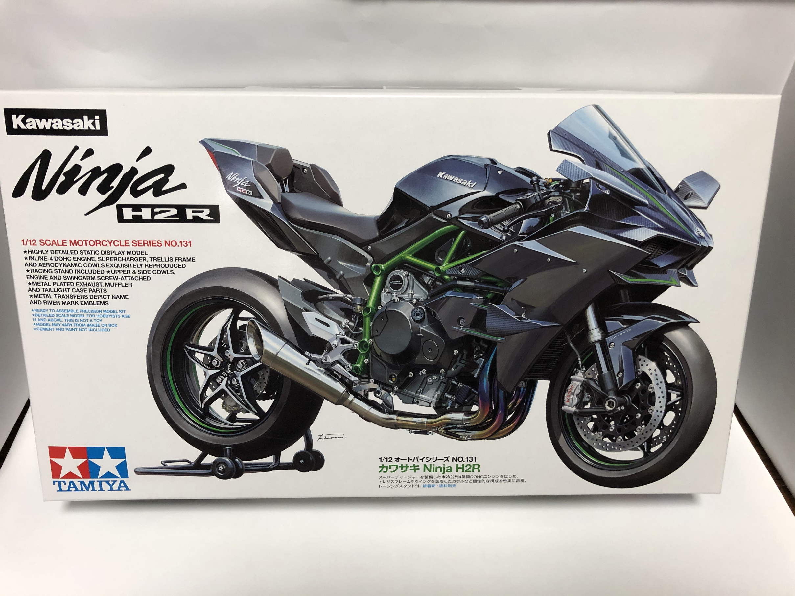

会社でNinja H2Rのプラモデルをもらいました。

Kawasaki Ninja H2R
カッコいい、、、
さて、このプラモデルを組み立てていくわけですが、せっかくなんで以下の3つのことも同時にやってみようと思います。
～プラモづくり三ヶ条～
１．じっくり楽しむ
２．塗装に挑戦する
３．バイクについて調べる
１に関してはこのプラモデル結構作りごたえがありそうなので気長に作っていけたらなぁという感じです。
２に関してはいままで塗装をしたことがない(ガンプラの組立ぐらいしかやったことがない)のでちょっと真面目に色塗り始めてみようかなって感じです。
３に関してはバイクの構造についてプラモデル組立ながら勉強していこうと思います(乗るのは好きなんだけどなぁ)。
よし、気合十分。プラモ組立史上最高の出来栄えにしてやる！